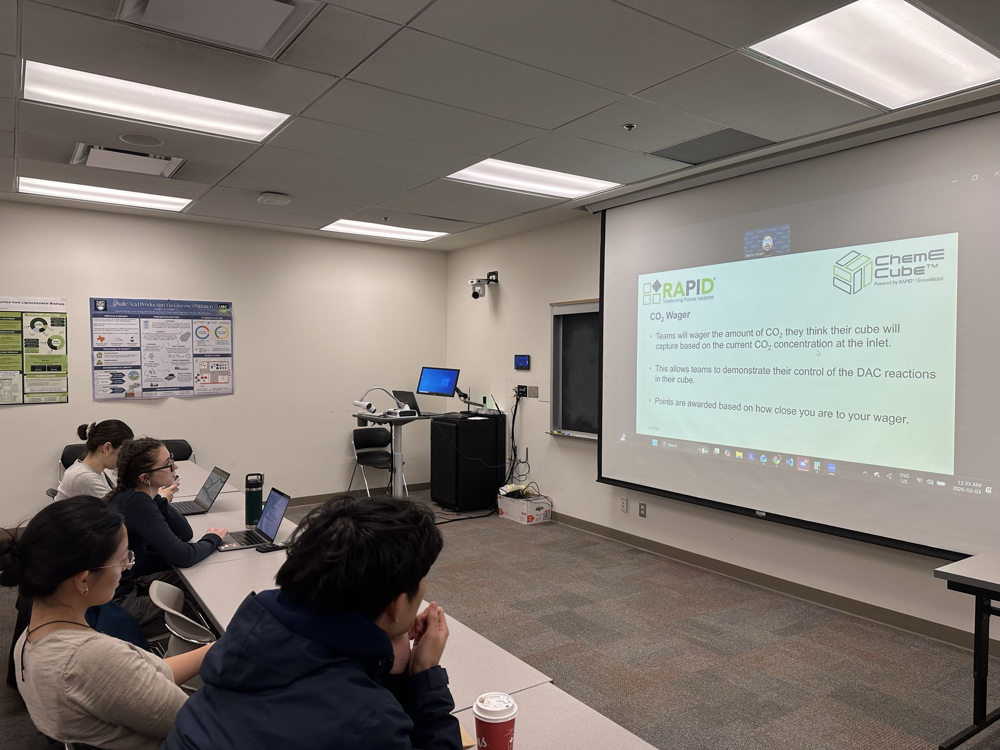
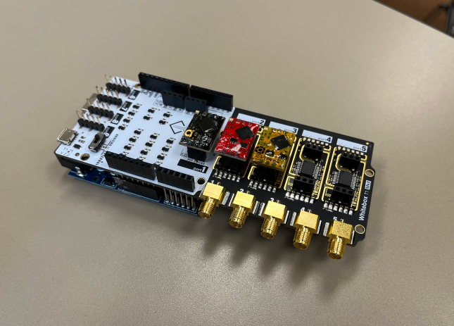
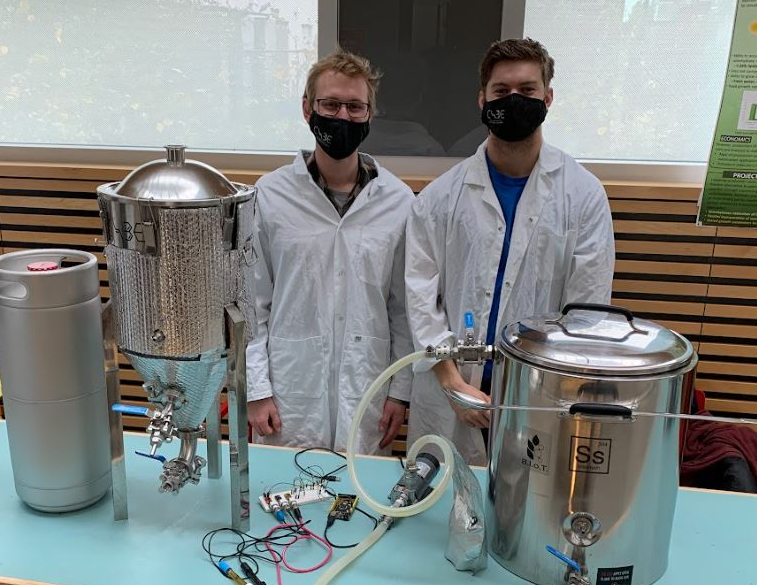
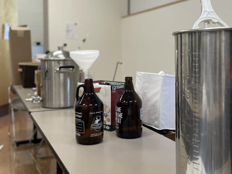

Formerly known as “UBC’s beer-brewing design team”, Biological Internet of Things (BIoT) has expanded to include a variety of projects in process control, R&D, and automation, including competing the annual ChemE Cube competition to build a miniature plant that performs carbon capture, IoT devices that automate fermentation processes, and experimental research projects in food technology like making glow-in-the-dark beer through genetic modification of yeast.

The ChemE Cube sub-team was founded in January 2026 to represent UBC in the ChemE Cube competition hosted by RAPID | ExxonMobil at the Annual AIChE Student Conference. They will design and build a chemical plant within a cubic foot that performs direct air capture (DAC), which they will present at the competition through a live demo, a 20 minute shark-tank style pitch, a 1-minute video, and a technical poster, all while competing against teams from all over the world.

The instrumentation team is responsible for creating equipment to sense brew data and automate tasks associated with the brewing process, and culminate it into a central web app. Common parameters to control are temperature, pH, dissolved oxygen, and specific gravity.

The brewing team is responsible for innovative recipe design, equipment maintenance and operational excellence. This sub-team utilizes biochemical theories learned in class with brewing science and industry knowledge to sustainably operate a bench scale brewery, run quality control assays (QC) and optimize utilization of waste streams.

The lab team is responsible for testing the final product for quality control as a simulation of real-world quality control processes. The team creates data clusters to develop models for brewing process data and uses laboratory equipment to test properties beyond the instrumentation team’s abilities.